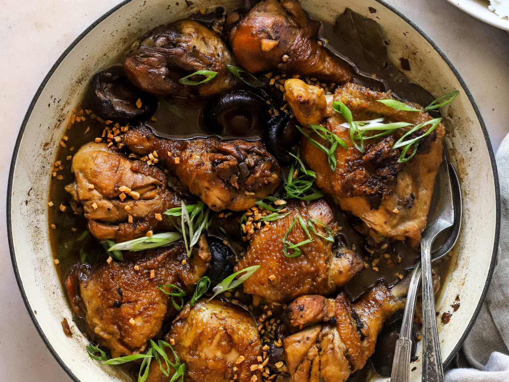

Chicken Adobo

Description
Chicken that has been braised in a delicious blend of soy sauce
and vinegar as well as some aromatics such as garlic, peppercorns,
among others. The dish has a salty, tangy, vinegary, and slightly sweet
flavor to it. It is also simple and straightforward to cook.
Ingredients
- 10-15 chicken thighs/drumsticks
- 2/3 cup of white vinegar
- 10 cloves of minced garlic
- Black peppercorns
- 1/2 cup of soy sauce
Steps
- Add sauce ingredients to pot
- Add chicken to pot
- Cook for ~2 hours on medium-low, turning every 30 min